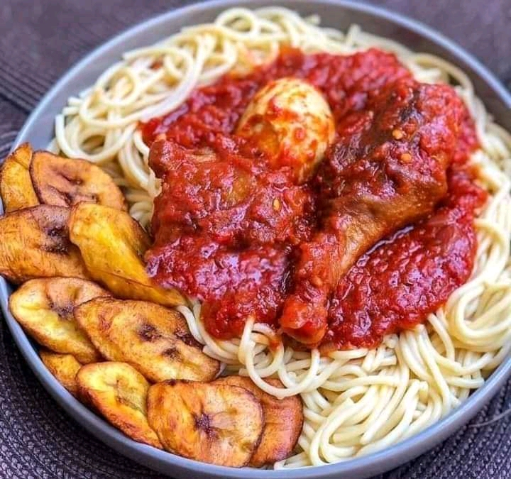

Back to Home
Stew Recipes

stew with spaghetti and egg
Ingredients:
- peppper base: 6 large plum tomatoes, 2 red bell peppers (tatashe), 1 large onion,
1-2 scotch bonnet peppers (ata rodo, to taste).
- stew base: 1/2 cup vegetable oil, 70g tomato paste( 1 samll can),
1 medium onions(sliced).
- protein & stock: 1 lb beef, chcken or goat meat, reserved meat stock(about 1-2 cups)
- seasoning: 2 bouillon cubes (Knorr or maggi), 1tsp curry powder, 1 tsp dried thyme,
2 bay leaves, salt to taste